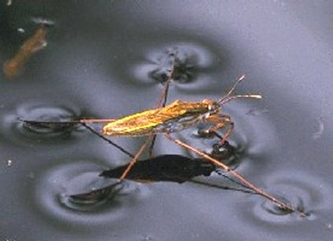
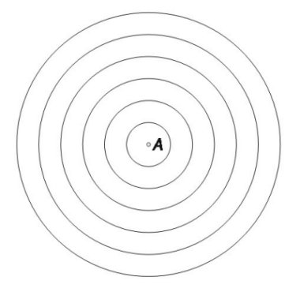
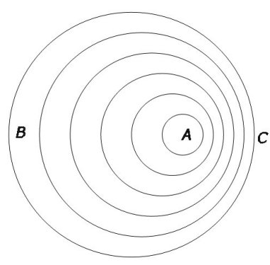
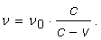
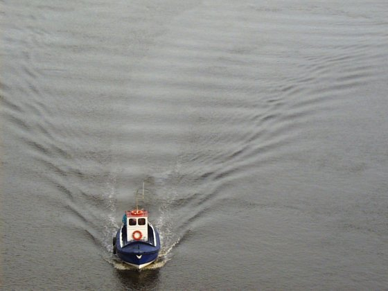
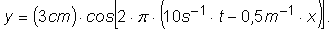

Dacă păşeşti pe nisip, urmele paşilor tăi rămân acolo unde au fost făcute (figura 1).
Fig. 1. Urme pe nisip.
Unele insecte pot "păşi" chiar şi pe apă (figura 2)!

Fig. 2. Insectă care poate "păşi" pe apă.
Atracţia dintre moleculele apei face ca suprafaţa acesteia să fie tensionată, asemenea unei membrane elastice. Apăsată uşor, suprafaţa apei se curbează şi poate susţine corpuri uşoare, cum sunt insectele.
Când "păşeşte" pe apă, o astfel de insectă generează unde pe suprafaţa apei. Fronturile de undă au centrul în locul perturbaţiei iniţiale şi raza din ce în ce mai mare.
În figura 3 au fost reprezentate schematic undele produse de o perturbaţie periodică produsă în punctul A de pe suprafaţa apei.
|  | Fig. 3. Reprezentarea schematică a undelor pe suprafaţa apei, provenite dintr−o perturbaţie periodică produsă în punctul A. |
Cercurile din figura 3 reprezintă "crestele" undelor (punctele de pe suprafaţa apei care se află, la un moment dat, la cea mai mare înălţime).
a. Care este semnificaţia distanţei dintre două "creste" vecine?
b. Încotro se deplasează o insectă care produce pe suprafaţa apei unde ca cele din figura 4?
|  | Fig. 4. Unde generate pe suprafaţa apei de o insectă care se deplasează. |
c. Cum este frecvenţa undelor care trec prin punctul B din figura 4, comparativ cu frecvenţa undelor generate de insectă? Dar frecvenţa undelor care trec prin punctul C?
d. Cum te aştepţi să se modifice fronturile de undă dacă insecta îşi inversează sensul de deplasare pe suprafaţa apei?
Răspuns parţial:
a. Lungimea de undă. b. Spre dreapta. Fronturile de undă mai recente (cele care au rază mai mică) au centrul mereu mai spre dreapta.
Exemplul prezentat în provocarea precedentă atestă faptul că frecvenţa undelor înregistrată de un observator depinde de mişcarea relativă dintre acesta şi sursa undelor − acesta este efectul Doppler.
a. Cât te aştepţi să fie frecvenţa undelor înregistrate de la o sursă care se apropie de observator cu viteza v, undele propagându−se cu viteza c, iar observatorul fiind în repaus faţă de mediul în care se propagă undele?
Analizează şi cazurile următoare:
b. Sursa se îndepărtează cu viteza v de observatorul aflat în repaus faţă de mediu.
c. Sursa este în repaus faţă de mediu, iar observatorul se apropie de sursă cu viteza v.
d. Sursa este în repaus faţă de mediu, iar observatorul se îndepărtează de sursă cu viteza v.
Răspuns parţial:
a. 
O ambarcaţiune se poate deplasa cu viteză mai mare decât a undelor pe care le produce pe suprafaţa apei.
a. Reprezintă schematic undele produse de ambarcaţiunea în mişcare cu viteză dublă faţă de cea a undelor pe care le produce pe suprafaţa apei.
b. De câte ori este mai mare viteza ambarcaţiunii din figura 5, în comparaţie cu viteza undelor pe care le produce pe suprafaţa apei?

Fig. 5. Valurile produse de o ambarcaţiune în mişcare.
Răspuns parţial:
b. De aproximativ 1,6 ori.
Ecuaţia unei unde plane transversale este:

Identifică:
a. Amplitudinea undei.
b. Lungimea de undă.
c. Frecvenţa.
d. Viteza de propagare a undei.
Răspuns parţial:
b. 2 m.
Legile după care se desfăşoară reflexia undelor mecanice sunt asemănătoare legilor reflexiei luminii.
Poţi obţine, din acest motiv, concluzia că lumina este o undă, sau chiar că lumina este o undă mecanică?
Răspuns parţial:
Concluzia că lumina este o undă poate fi obţinută doar dacă lumina se comportă ca undă în toate situaţiile (reflexia este doar un singur caz).
Cum te aştepţi să se desfăşoare reflexia unei unde plane pe un obstacol concav?
Dar pe unul convex?
Analizează cazul în care obstacolul este circular, cu raza mult mai mare decât "deschiderea" sa.
Cum te aştepţi să se desfăşoare refracţia unei unde plane pe un obstacol lenticular?
Poţi oare utiliza ce şti deja despre lentilele prin care se refractă lumina?
În cazul luminii, ai întâlnit fenomenul reflexiei totale.
Este oare posibil un astfel de fenomen şi în cazul undelor mecanice?
Cele mai distrugătoare unde seismice sunt undele S.
a. Cum ai putea fi avertizat înainte ca undele S să ajungă la tine, doar detectând undele P (care sosesc primele)?
b. Cât ar fi timpul de avertizare oferit de un astfel de sistem în localitatea în care te afli, în cazul unui cutremur din zona Vrancea,
produs la 100 km adâncime?
De câte ori creşte amplitudinea undelor seismice în cazul creşterii magnitudinii cu o zecime de grad pe scara Richter?
Dar energia eliberată de cutremur?
Cât de intens este resimţit un cutremur într−o anumită zonă depinde de mulţi factori (în principal, de distanţa faţă de epicentru).
Intensitatea cu care este resimţit un seism, într−un anumit loc, este descrisă pe o scară de intensităţi, numită scara Mercalli.
Interesează−te în legătură cu această scară (cea mai la îndemână sursă este internetul!).
Două surse generează unde plane care se propagă către un perete. Dreapta care uneşte sursele este paralelă cu peretele, iar distanţa dintre surse şi perete este mult mai mare decât distanţa dintre surse.
Cât te aştepţi să fie distanţa dintre două maxime de interferenţă vecine, la nivelul peretelui? Această distanţă este numită interfranjă.
Întinde un fir elastic vertical, în faţa unui monitor care prezintă un ecran alb.
Provoacă unde în firul elastic şi observă firul.
Modifică tensiunea firului, până când observi o imagine "încremenită" a undelor care se propagă în acesta. Această metodă de observare a proceselor periodice este numită stroboscopie.
Cuoscând frecvenţa de reîmprospătare (screen refresh rate) a ecranului monitorului, estimează viteza cu care se propagă undele în fir.
Electronii se pot deplasa aproape liber în interiorul unui fir metalic, dar nu şi la frontiera acestuia.
Care te aştepţi să fie relaţia dintre lungimea unui fir metalic utilizat ca antenă şi lungimea fundamentală de undă a undelor staţionare longitudinale ale electronilor în fir?
Dar dacă un capăt al antenei este legat la Pământ?